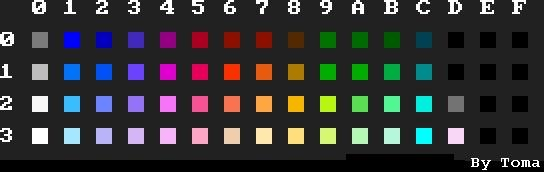
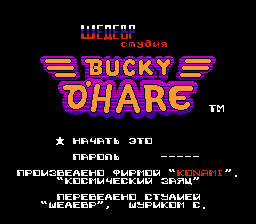
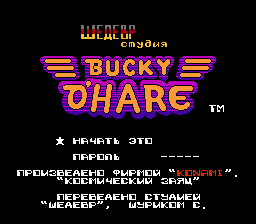
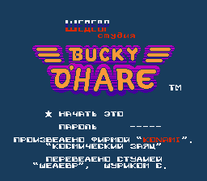
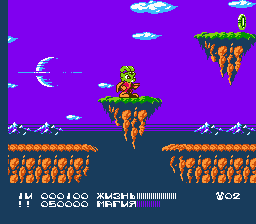
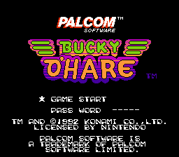
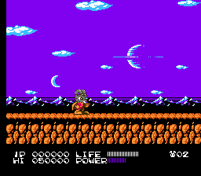

Цвета и палитры NES
- Разминка
Перед тем как начать, лучше сразу понять, что нужно знать, чтобы полностью понять этот документ. Во-первых, нужно знать основы программирования на ассемблере. (Основы просты: нужно понимать каждую команду и режимы адресации команд). Так же нужно быть сведущим в двоичной системе счисления, включая и вычисления в ней. В общем, для того чтобы начать пользоваться FCEUd нужно не так много. Документы по ассемблеру процессоров семейства 6502 и разные доки можно найти на Zophar Domain и ROMHacking.net. Или просто используйте поиск со словами “6502 Assembly” в Гугле.
То, что нам понадобится:- Лично я использую FCEUxdSP, однако можно также взять FCEUxd или FCEUd
- РОМ игры Bucky O’Hare,
- Разные доки, которые можно найти на: www.zophar.net/, tv-games.ru, www.romhacking.net/
- Лично я использую FCEUxdSP, однако можно также взять FCEUxd или FCEUd
- Теория
Как уже повелось, начнём с теории рассматриваемого вопроса. Далее я опишу только самые основы, которые понадобятся нам в дальнейшем. Более подробно в техническом плане о палитрах и атрибутах можно будет прочитать в таких замечательных документах, как Nintendo Entertainment System Architecture by Marat Fayzullin; Архитектура и программирование Dendy. MiGeRA S0ftWareZ; Статья из журнала GameBit #7 ‘Палитровые эффекты’ Zephyr’а.
NES имеет две 16-тицветных палитры: для изображений(фон и т.д.) и вторая для спрайтов. В памяти PPU они располагаются по адресам $3F00 и $3F10 соответственно. Понятие палитры подразумевает, что в памяти хранятся RGB характеристики цвета. На NES цвета заготовлены заранее, поэтому палитрами всё это можно назвать лишь условно: каждому цвету поставлено в соответствие некоторое числовое значение. Всего возможных цветов 64. Для наглядности приведём таблицу цветов и соответствующихим значений:

По таблице можно видеть, что в байте палитры используются только 6 младших бит: четыре младших бита характеризуют оттенок, а два старших - яркость Палитры хранятся по адресам: $3F00-$3F0F для палитры картинок; $3F10-$3F1F для спрайтовой палитры. Как мы видим, палитра занимает место в 16 байт, соответственно в каждой палитре будет по 16 цветов. Те, кто хоть раз рисовал в графических редакторах для игр на Денди, хорошо помнят, что раскрашивать картинку можно только в четыре цвета. Откуда же тогда 16? Действительно и на экране можно встретить гораздо больше, чем 4 цвета. Для простоты, можно всё представить так: вся палитра разбивается по порядку на четыре части (по 4 цвета в каждой) и некоторому блоку (размером 2*2 тайла) может быть присвоен свой номер части палитры. За такое присвоение отвечает таблица атрибутов. О ней чуть позже.
Итак, палитра - это фактически совокупность из 16 байт, каждый из которых показывает какой цвет нужно вывести на экран. В первой части палитры в качестве первого цвета хранится номер холста, который будет просвечивать через прозрачные цвета, во второй части палитры первый цвет указывает на то,какой цвет в этой части будет прозрачным, в третьей части первый цвет указывает на то, какой цвет в этой части будет прозрачным, и так далее. Таким образом, с точки зрения вывода цвета на экран, первые цвета во второй третьей и четвёртой частях палитры будут абсолютно бесполезны, так как они заменяются на цвет холста.Так вот - архитектура PPU Денди предусматривает отражение “лишних” ячеек палитры ($3F04, $3F08 и $3F0C) в ячейку цвета холста ($3F00). И на экране возможны не 16, а уже 13 различных цветов, что в совокупности с цветами спрайтов могут дать 26 уникальных цветов на экране. Надеюсь, это понятно.
Теперь об атрибутах. Таблицы атрибутов картинок (про спрайтовые атрибуты будет поведано в разделе Спрайтовых палитр) хранятся в памяти PPU сразу после соответствующей тайловой карты, таким образом, можно выделить 4 таблицы по числу тайловых карт. Размером каждая таблица по 64 байта (например, таблица атрибутов для первой тайловой карты будет расположена по адресу $23C0-$23FF, а в $2400 уже расположена вторая тайловая карта). Каждый байт таблицы атрибутов отвечает за 16 тайлов, соответственно, каждые два бита отвечают за группу из четырёх тайлов. Нагляднее всего этот вопрос раскрыт в документе MiGeR’ы. Байт области атрибутов по адресу $23C0. Содержит атрибуты четырех смежных групп. Цветом указано соответствие атрибутов группам.
Таким образом, два бита дают нам номер группы в общей палитре. Например, байт $AA в таблице атрибутов или 10101010b раскрасит квадрат из 16 тайлов в цвета третьей палитровой группы (т.к. 10b = 2, но не стоит забывать и про то, что первая группа будет определяться 00b, т.е. логичнее её называть нулевой группой). соответственно последняя (четвертая группа) будет соответствовать 11b. Фоновые Палитры
Честно говоря, идея этого документа родилась, когда я вдруг в своих РОМсетах обнаружил перевод Шедевра игры Bucky O’Hare . Про перевод ничего говорить не буду - у меня другая цель. Моё внимание привлёк титульный экран: 
Сначала когда я увидел российский триколор, я сразу подумал, что уже в те далёкие времена ромхакеры могли не пожалеть времени и изменить палитру ради патриотических чувств. =) Однако сравнив палитры в оригинале и изменённом РОМе можно легко убедиться, что в этом случае переводчику просто необычайно повезло: сама палитра удивительным образом совпадает с цветами российского флага (просто в оригинале синий цвет в надписи ‘Palcom’ не используется). На этом предисловие заканчивается и начинаются суровые будни. Не так давно для нахождения палитр вам можно было смело посоветовать искать их с помощью Nesticle(которая, лично у меня, не пустилась даже под DosBox’ом), а потом искать последовательность байт с помощью хексредактора. В документе ‘Palette Modifications of an NES file using a Hex Editor’ by aStROcReEp вообще советуют обозначить каждый цвет буковкой, составить таблицу и искать сочетания этих буковок. Эти методы подходят начинающим, однако требуют диких затрат времени и могут не сработать(скажем, когда индексы цветов загружаются из операндов команд). Сейчас ситуация в корне изменилась - появился FCEUxd(FCEUxdsp). Гарантировано идёт под 32-разрядными Windows и имеет удобный хексредактор. Итак, быстрый способ нахождения палитр. Открываем в нашем замечательном отладчике указанный выше РОМ. Ставим останов на запись данных в палитру картинки по адресу $3F00 в PPU непосредственно перед загрузкой нашего титульника и дожидаемся его загрузки. Останов сработал:$D5DF:8D 07 20 STA $2007 = #$00 $D5E2:B9 20 01 LDA $0120,Y @ $0124 = #$27 $D5E5:C8 INY $D5E6:C9 FF CMP #$FF $D5E8:D0 F5 BNE $D5DFВ аккумуляторе $0F- чёрный цвет холста. Скорее всего, перед нами подпрограмма, которая выводит Y значений в память PPU, а значения берутся из ячеек, начиная с $0123. Отследим запись в эту ячейку. Поставим останов на запись опять же перед загрузкой титульного экрана. Останов срабатывает дважды в одном и том же месте. С точки зрения рассмотрения алгоритма нам всё равно, какой раз брать.
$C54D:85 0B STA $000B = #$08 $C54F:A0 00 LDY #$00 $C551:A9 0F LDA #$0F $C553:9D 20 01 STA $0120,X @ $0123 = #$0F $C556:E8 INX $C557:A9 03 LDA #$03 $C559:85 0A STA $000A = #$00 $C55B:B1 08 LDA ($08),Y @ $96AB = #$27 $C55D:9D 20 01 STA $0120,X $C560:E8 INX $C561:C8 INY $C562:C6 0A DEC $000A $C564:D0 F5 BNE $C55B $C566:C6 0B DEC $000B $C568:D0 E7 BNE $C551 $C56A:60 RTSПодпрограмма вывода всей палитры во всей своей простоте и изяществе! $000B - общий счётчик введённых индексов цветов; $000A - частный счётчик цветов в каждой части палитры (мы же ведь не забыли, что палитра условно разбивается на четыре части?) В ячейках $08 и $09 содержатся указатели на палитру, которые в случае чего можно/нужно будет поменять. $96AB - адрес в RAM, содержащий второй индекс цвета в первой части палитры. Второй, потому что первый загружается из операнда команды по адресу $C551.
Сразу видно преимущество этого метода: в РОМе хранятся только 2,3 и 4-й цвета, а первый всегда $0F. Следовательно, если бы мы воспользовались советами тех документов, что были написаны для начинающих The Palette Hacking Doc by Toma; Palette Modifications of an NES file using a Hex Editor; The newbie NES Pallete hacking Tutorial. by Dark X; NES Palette hacking: The Fast Way (using FCEUd), мы должны были найти во вкладке ‘Tools -> PPU Viewer…’ нашу загруженную палитру, потыкать в каждый цвет мышкой и записать на листочке байты: $0F $27 $16 $20 $0F $27 $14 $03… и попытаться найти их в РОМе. Понятно, что в нашем РОМе первого, пятого,девятого и тринадцатого $0F быть не может. С точки зрения начинающего - палитра ненаходима и/или зажата страшным алгоритмом!
Теперь воспользуемся преимуществами хексредактора FCEuXD: откроем редактор и найдём адрес $96AB, правой кнопкой мыши -> Go Here In Rom File, и вот он наш адрес: $116BB. Для проверки поменяем палитру. Впишем по адресу $116с1 (судя по PPU Viewer’у надпись использует именно третью палитру) значения других цветов. Например, сочетание $28 $05 $00 даст нам цвета германского флага:

Faterland uber alles! =)
В принципе, можно поменять и фон холста (подредактировав команду по адресу $C551), например:

Однако, практической выгоды это не несёт, так как всё, что было прозрачным теперь стало этого цвета. Даже космос стал… голубоватым.

Возникает вопрос: как можно использовать в наших корыстных целях таблицу атрибутов? Один из вариантов - присвоить участку экрана другую часть палитры (скажем, если нам не желательно изменять старую палитру), или даже присвоить участку ранее не встречавшиеся цвета.
Для примера предположим, что нам нужно, чтобы в надписи bucky o’hare слово bucky было зелёного цвета (как и сам главный герой). Однако в исходных частях палитры зелёного цвета нет! Зрячие также могут увидеть, что в четвёртую палитру загружены только цвета холста, т.е. она пустая. Вот и выход: вписать вместо $0F нужные нам цвета, а затем переназначить ту часть таблицы, что отвечает за наше слово со второй части палитры на четвёртую.
Как вписать нужные цвета (среди которых должен быть один зелёный) в палитру - смотри выше. А вот таблица атрибутов может быть найдена следующим образом (для наглядности я возьму довольно долгий способ). Доходим до титульника, открываем Hex Editor, выбираем PPU Memory, находим адрес первой таблицы атрибутов ($23c0) и начинаем запарывать байты поочерёдно (скажем, вписывать в ячейки байт FF, так как он не встречается в нашей таблице). В результате в самом эмуляторе мы увидим, что определённые квадраты начинают окрашиваться необычно. Таким образом, можно вычислить адреса, отвечающие за наше слово (в нашем случае это $23d0-$23D7). Соответственно, ставим останов на запись в эту область PPU и дожидаемся загрузки титульного экрана.$C677:8D 07 20 STA $2007 = #$00 $C67A:88 DEY $C67B:D0 FA BNE $C677Очевидно, здесь байт рома записывается в PPU столько раз, сколько будет в Y. Если так можно сказать, метод, похожий на RLE сжатие. Находим место, откуда берётся значение аккумулятора: Нажимаем несколько раз Step Into, пока Y не станет равным нулю, после операций над ячейками $00 и $01 (там хранятся указатели) программа загружает следующее значение в нашу таблицу атрибутов: ``` $C643:A0 00 LDY #00C645:B1 00 LDA ($00),Y @ $81A4 = #01C647:C9 FF CMP #FFC649:F0 3E BEQ C689C64B:C9 7F CMP #7FC64D:F0 32 BEQ C681C64F:A8 TAY ``` Y берётся из ячейки $81A4, соответствующей $101b4, а значит вначале значения загружались из $101b2 (мы же не забыли, что продвинулись по программе вперёд?). Даже визуально можно определить, что сначала идёт байт-счётчик ($0E), затем атрибут ($55), который будет записываться $0E раз. Заметьте, что атрибут соответствует 01010101b, а значит, будет указывать на вторую палитру. Далее идёт атрибут $11, который вписывается один раз - он соответствует буковкам ‘TM’ после нашей надписи - они белые.
Перед нами стоит задача: разбить нашу надпись на две части (как видите, вся надпись обладает одним атрибутом, который загружается одним байтом) и переназначить атрибут на четвертую часть палитры. Если быть кратким, то это делается заменой байт по адресу $101b2 на $08 $FF $08 $55. Обратите внимание, что тогда буквы ТМ станут принадлежать второй части палитры (как и слово ‘O’Hare’) и станут фиолетовыми, но, думаю, чем-то нужно будет обязательно пожертвовать. Зато теперь мы добились нужного эффекта - верхнее слово можно будет раскрасить в нужный нам цвет.
Вот, например, что можно сделать с титульником, если подредактировать таблицу атрибутов как было указано выше, заменить пустую палитру своей, и чуть-чуть подменить цвета в графическом редакторе:

Вроде симпатично получилось =)Спрайтовые Палитры
В сущности, спрайтовые палитры мало чем отличаются от палитры картинок. Непосредственно палитра, как уже было сказано, хранится по адресам $3F10 - $3F1F и правила её нахождения и изменения абсолютно такие же, как и для палитры картинок. Чуть по-другому организовано понятие атрибутов спрайтов.
Внутри PPU есть отдельно адресуемая (от основного адресного пространства PPU - 16k) память спрайтов, размером 256 байт. Эта память хранит “записи” о 64 спрайтах, размер каждой записи 4 байта. Первый байт - координата по вертикали второй - индекс спрайта, третий - искомый нами атрибут, четвёртый - координата по горизонтали. Так как атрибут присвоит каждому спрайту в отдельности, то появляется возможность выделять под номер части палитры не весь байт, а только младшие два бита. Остальные биты отданы под другие атрибуты: например, отражение и приоритет спрайта. Фактически, поиск атрибута спрайта будет сводиться к нахождению спрайтового буфера и нахождению нужного нам спрайта, а следующий за индексом спрайта байт будет являться искомым байтом атрибута.
Итак, предположим, что нам нужно поменять цвет головы главного героя: у обычных зайцев он, вроде, серый =) Находим часть палитры, которой присвоен наш спрайт. Это вполне можно сделать и визуально (уж точно быстрее), однако в обучающих целях попробуем найти эту часть через атрибут спрайта. Находим спрайтовый буфер (эта операция описана в доке CaH4e3’a) - здесь он расположен по адресу $200. Находим индекс нашего спрайта (хотя в памяти PPU несколько голов - нужная нам голова имеет индекс $03) по адресу $0215. Соответственно, атрибут будет $02 = 00000010b, это означает, что тайлу головы присвоена третья часть палитры, так как младшие два бита составляют двойку в десятичной системе. И теперь попробуем поменять эту часть палитры. Поиск всей палитры производится так же, как и для картинок. Правда, в нашем случае палитры спрайтов хранятся несколько иначе, чем палитры картинок, но принципиально поиск ничем не отличается от описанного выше. Последние 8 цветов палитры хранятся по адресам РОМа $11c3d - $11c44. Наш зелёный ($29) цвет по адресу $11c40 заменяем на нормальный серый ($2D)цвет: 
При необходимости можно переназначить голову на другие части палитры, однако не стоит забывать, что голова состоит не из одного тайла, т.е. переназначать на другие части придётся и другие тайлы, составляющие голову (уши и прочее).